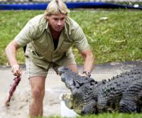
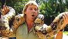
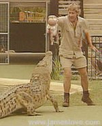

आज की सबसे दुर्भाग्यपूर्ण खबर यह है कि डिस्कवरी, नेशनल ज्योग्राफ़िक और एनिमल प्लेनेट चैनल पर मगरमच्छों और अजगरों के साथ खेलते और उन्हें पकड़ते दिखते ऑस्ट्रेलिया के पर्यावरणविद स्टीव इरविन का एक जहरीली मछली के काटने से निधन हो गया है। स्टीव की बहादुरी के चलते उन्हें “क्रोकोडाईल हंटर” भी कहा जाता था।
डिस्कवरी के लिये अनेक फ़िल्में बनाने वाले इस बहादुर को साँपो और मगरमच्छों से कभी डर नहीं लगा परन्तु ग्रेट बेरियर रीफ़ के पास समुद्र में हो रही एक शूटिंग के दौरान उन्हें एक छोटी सी स्टिंगरे नामक जहरीली मछली के काट लेने के बाद उन्हें अस्पताल ले जाया गया परन्तु स्टीव को बचाया नहीं जा सका। नीचे दिये चित्र में स्टिव अपने बच्चे और मगरमच्छ के साथ खेल रहे हैं, एक बार उन्होनें अपने छोटे से बच्चे को अजगर के बाड़े में छॊड़ दिया था इस वजह से उनकी बहुत आलोचना भी हुई थी।
हिन्दी चिट्ठा जगत की ओर से इस बहादुर को हार्दिक श्रद्धान्जली।


